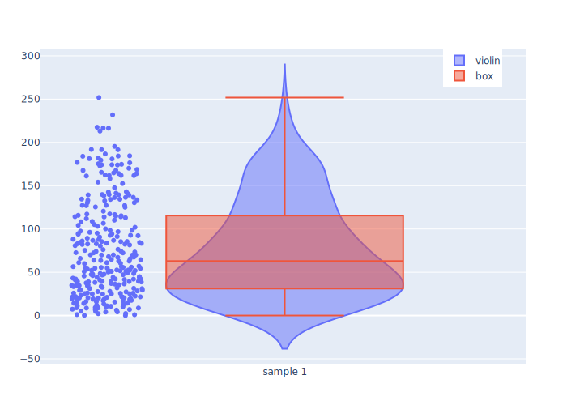
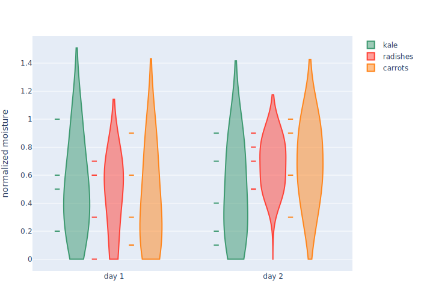
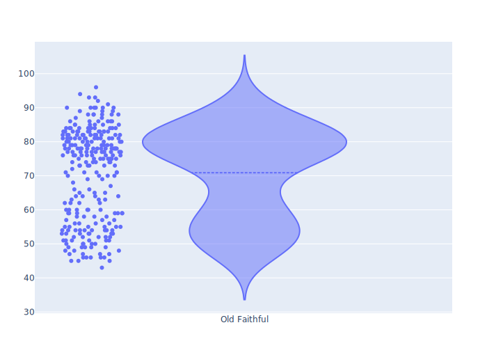
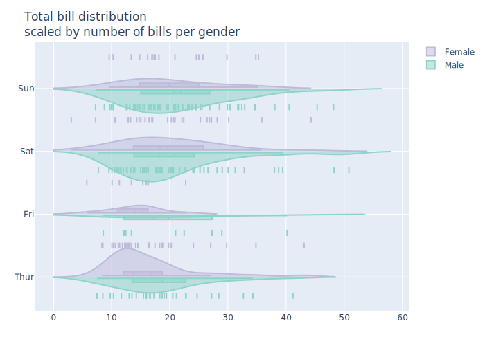
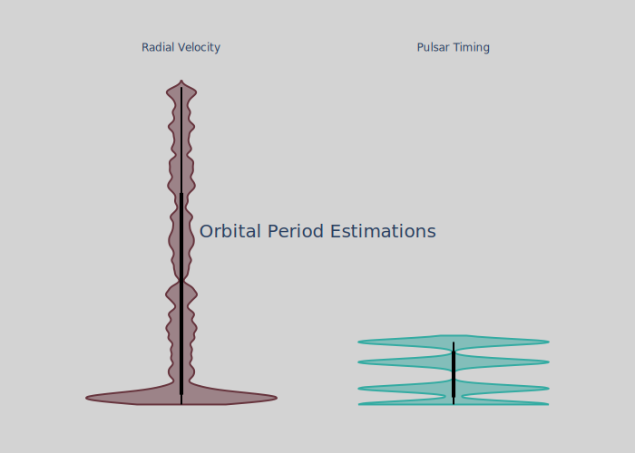

using PlotlyJS, RDatasets, DataFrames
function violin_box_overlay()
y = abs.(100 .* randn(300))
data = [
violin(x0="sample 1", name="violin", y=y, points="all"),
box(x0="sample 1", name="box", y=y, boxpoints=false)
]
plot(data, Layout(legend=attr(x=0.95, xanchor="right")))
end
violin_box_overlay()
function violin_grouped()
days = repeat(["day 1", "day 2"], inner=5)
y_kale = [0.2, 0.2, 0.6, 1, 0.5, 0.4, 0.2, 0.7, 0.9, 0.1, 0.5, 0.3]
y_radish = [0.6, 0.7, 0.3, 0.6, 0, 0.5, 0.7, 0.9, 0.5, 0.8, 0.7, 0.2]
y_carrot = [0.1, 0.3, 0.1, 0.9, 0.6, 0.6, 0.9, 1, 0.3, 0.6, 0.8, 0.5]
colors = ["#3D9970", "#FF4136", "#FF851B"]
names = ["kale", "radishes", "carrots"]
ys = (y_kale, y_radish, y_carrot)
data = [
violin(
y=y, name=name, x=days, span=[0, nothing], jitter=0, points="all",
marker=attr(symbol="line-ew", color=color, line=attr(color=color, width=2))
) for (y, name, color) in zip(ys, names, colors)
]
layout = Layout(
yaxis=attr(zeroline=false, title="normalized moisture"),
violinmode="group"
)
plot(data, layout)
end
violin_grouped()
function violin_nonlinear()
p1 = plot(
violin(
x=["1798-01-01", "1798-04-04", "1798-05-05",
"1798-05-05", "1798-07-05", "1798-07-22", "1799-01-01"],
orientation="h", box_visible=true, xcalendar="discworld",
name="discworld dates"
)
)
p2 = plot(
violin(
x=["A", "B", "C", "C", "C", "D", "G"],
orientation="h", box_visible=true, xcalendar="discworld",
name="categories"
), Layout(xaxis_categoryarray='A':'G')
)
p = [p1; p2]
relayout!(p, showlegend=false, margin_l=100)
p
end
violin_nonlinear()
function violin_old_faithful()
y = [79, 54, 74, 62, 85, 55, 88, 85, 51, 85, 54, 84, 78, 47, 83, 52, 62,
84, 52, 79, 51, 47, 78, 69, 74, 83, 55, 76, 78, 79, 73, 77, 66, 80, 74, 52,
48, 80, 59, 90, 80, 58, 84, 58, 73, 83, 64, 53, 82, 59, 75, 90, 54, 80, 54,
83, 71, 64, 77, 81, 59, 84, 48, 82, 60, 92, 78, 78, 65, 73, 82, 56, 79, 71,
62, 76, 60, 78, 76, 83, 75, 82, 70, 65, 73, 88, 76, 80, 48, 86, 60, 90, 50,
78, 63, 72, 84, 75, 51, 82, 62, 88, 49, 83, 81, 47, 84, 52, 86, 81, 75, 59,
89, 79, 59, 81, 50, 85, 59, 87, 53, 69, 77, 56, 88, 81, 45, 82, 55, 90, 45,
83, 56, 89, 46, 82, 51, 86, 53, 79, 81, 60, 82, 77, 76, 59, 80, 49, 96, 53,
77, 77, 65, 81, 71, 70, 81, 93, 53, 89, 45, 86, 58, 78, 66, 76, 63, 88, 52,
93, 49, 57, 77, 68, 81, 81, 73, 50, 85, 74, 55, 77, 83, 83, 51, 78, 84, 46,
83, 55, 81, 57, 76, 84, 77, 81, 87, 77, 51, 78, 60, 82, 91, 53, 78, 46, 77,
84, 49, 83, 71, 80, 49, 75, 64, 76, 53, 94, 55, 76, 50, 82, 54, 75, 78, 79,
78, 78, 70, 79, 70, 54, 86, 50, 90, 54, 54, 77, 79, 64, 75, 47, 86, 63, 85,
82, 57, 82, 67, 74, 54, 83, 73, 73, 88, 80, 71, 83, 56, 79, 78, 84, 58, 83,
43, 60, 75, 81, 46, 90, 46, 74]
plot(violin(y=y, points="all", name="Old Faithful", meanline_visible=true))
end
violin_old_faithful()
function violin_side_by_side()
# requires RDatasets and DataFrames
tips = RDatasets.dataset("reshape2", "tips")
parts = zip(
("Female", "Male"),
("positive", "negative"),
("#bebada", "#8dd3c7"),
(1.0, -0.6)
)
traces = GenericTrace[]
for (sex, side, color, pointpos) in parts
sub_tips = tips[tips[!, :Sex] .== sex, :]
sub_traces = violin(sub_tips,
group=:Day,
x=:TotalBill, y0=(df) -> df[1, :Day],
side=side, orientation="h",
marker=attr(line=attr(width=2, color=color), symbol="line-ns"),
line_color=color,
hoveron="points+kde", text=(df) -> "Sample length $(size(df, 1))",
scalemode="count", scalegroup=sex, legendgroup=sex, name=sex,
points="all", jitter=0, pointpos=pointpos,
span=[0],
box_visible=true, meanline_visible=true,
showlegend=false,
)
sub_traces[1][:showlegend] = true
append!(traces, sub_traces)
end
# TODO: make the layout
layout = Layout(
hovermode="closest", violinmode="overlay",
title="Total bill distribution<br><i>scaled by number of bills per gender",
legend_tracegroupgap=0, violingap=0, violingroupgap=0,
yaxis=attr(showgrid=true, categoryarray=["Thur", "Fri", "Sat", "Sun"]),
)
plot(traces, layout)
end
violin_side_by_side()
function violin_style()
y1 = vcat(abs.(20 .* rand(100)), rand(UInt16, 300) .* 500 ./ typemax(UInt16))
y2 = [25.261999999999997, 66.5419, 98.2114, 0.09070629 ]
box = attr(fillcolor="black", line_color="black", width=0.01)
span = [0, nothing]
trace1 = violin(
bandwidth=5, points=false, y=y1, name="Radial Velocity",
span=span, line_color="#67353E", box=box
)
trace2 = violin(
bandwidth=5, points=false, y=y2, name="Pulsar Timing",
span=span, line_color="#34ABA2", box=box
)
layout = Layout(
paper_bgcolor="#d3d3d3", plot_bgcolor="#d3d3d3",
showlegend=false, violingap=0, xaxis_side="top",
yaxis=attr(
showline=false, showticklabels=false, range=(-5, 550),
zeroline=false, visible=false, showgrid=false,
),
annotations=[attr(
text="Orbital Period Estimations", font_size=20,
xref="paper", yref="paper", showarrow=false,
)]
)
plot([trace1, trace2], layout)
end
violin_style()
